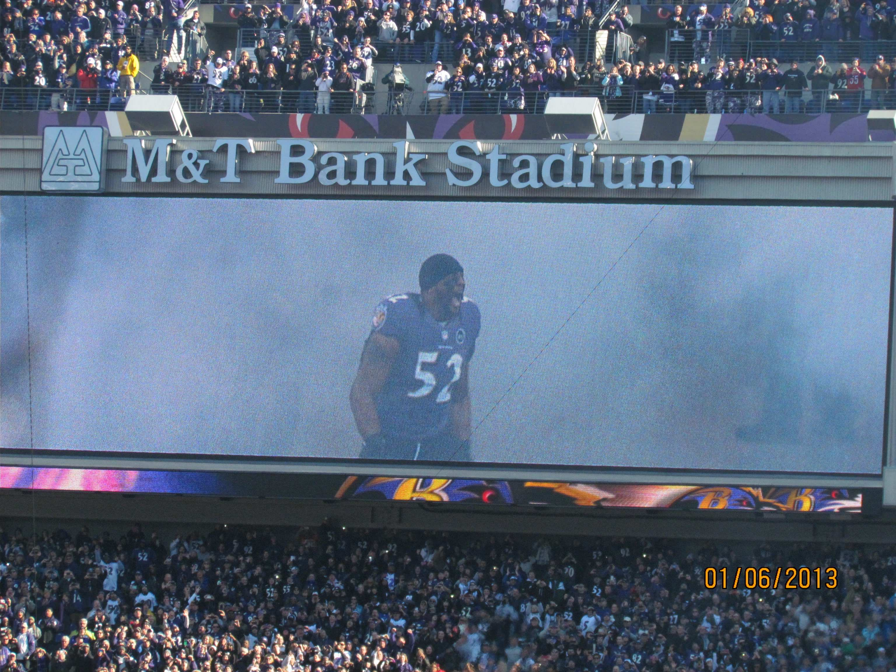
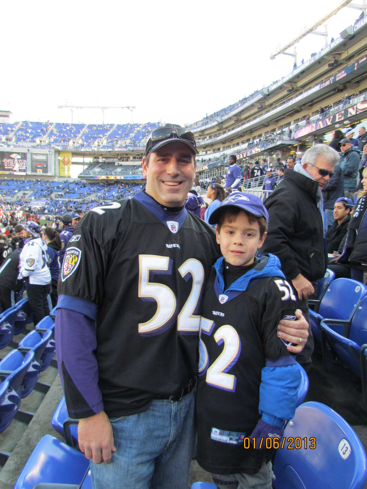
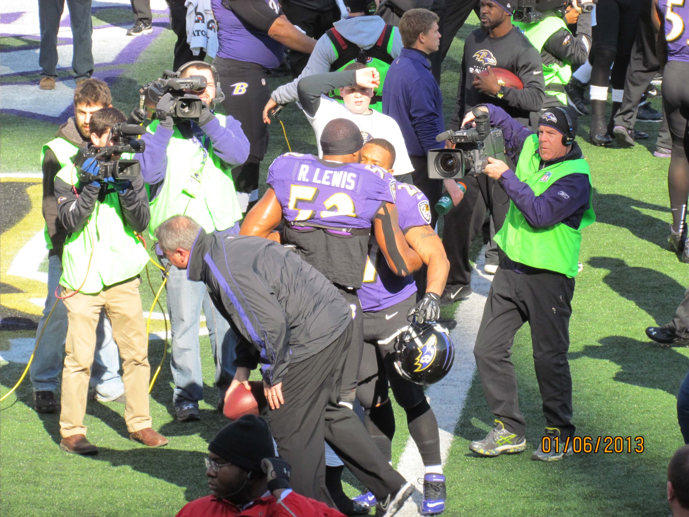
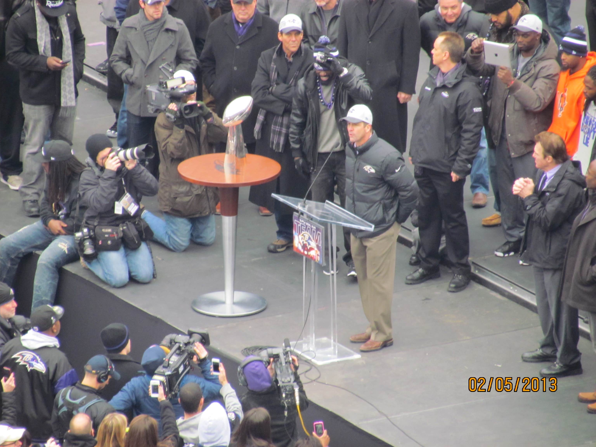
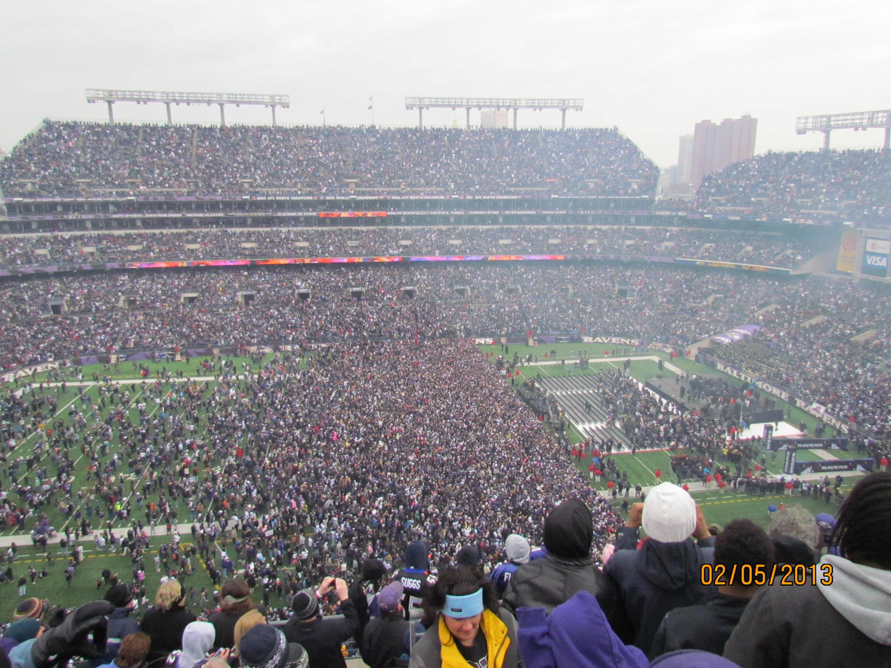
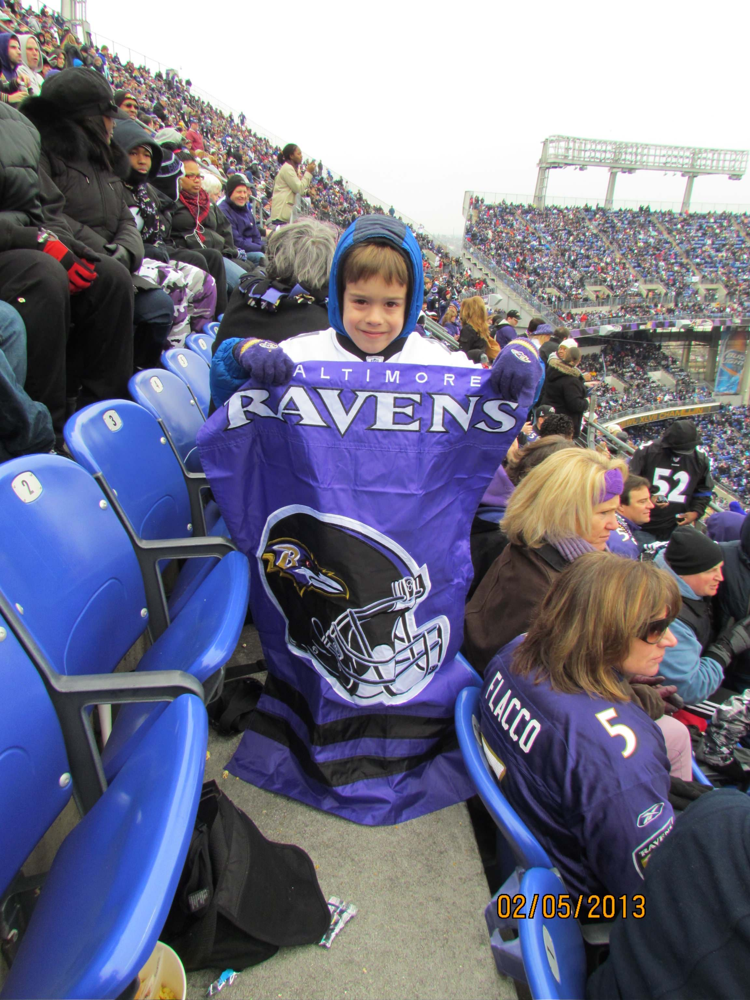
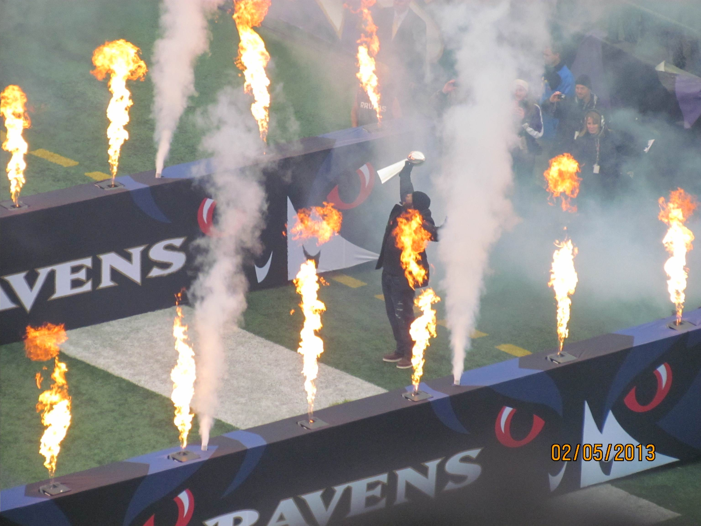
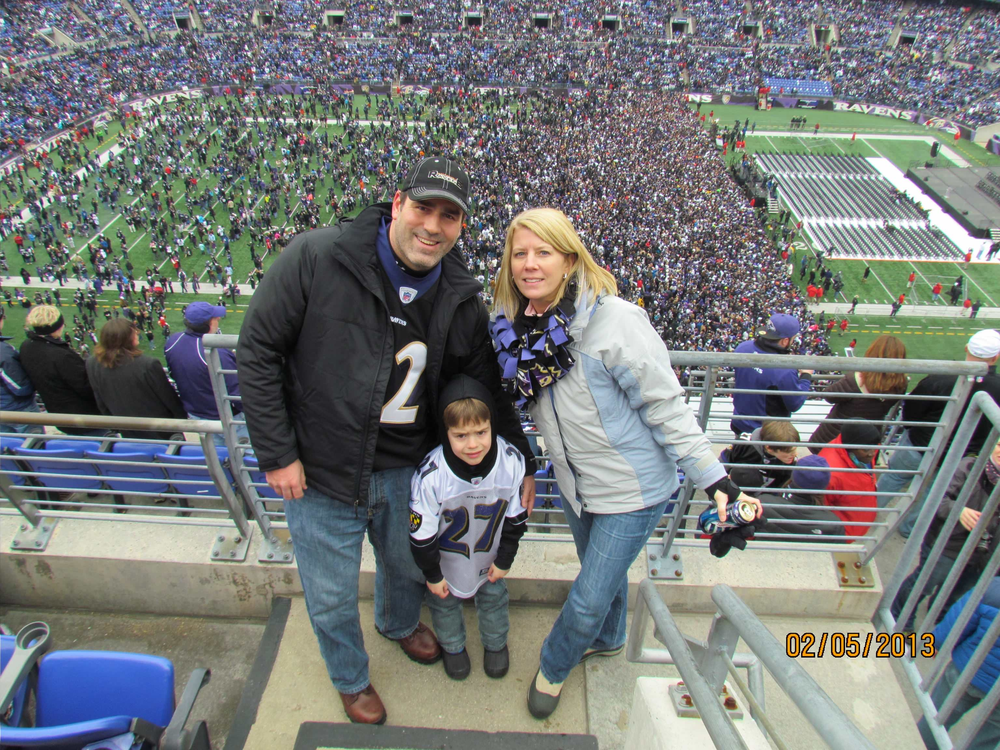

I began going to Ravens games when I was just five years old. My first attended game was a preseason matchup against the Kansas City Chiefs on August 19, 2011. Season number one as a diehard football fan caused me immense heartbreak. It ended with an AFC Champiopnship loss. A Lee Evans dropped touchdown led the Ravens to try a 33-yard field goal late in the game, which Billy Cundiff shanked into the stands.
I remember sitting in my living room in tears. I may had been just five years old, but I understood the magnitude of the moment. The Ravens were a dropped touchdown away from taking a late lead. They were a chip-shot field goal away from tying the game and sending it to overtime with a chance to go to the Super Bowl.
After a heartbreaking ending, I would have to wait another seven months to watch Ravens football again.
This season was so much fun for a multitude of reasons. The Ravens started the season hot, and in week 3 they would get their revenge against the Patriots team that knocked them out the season before. The season started during an NFL referee lockout, so the replacement referees became a big storyline late in this game.
In the fourth quarter, John Harbaugh was assessed an unsportsmanlike conduct penalty while trying to call a timeout. I was at this Sunday Night Football game at the age of six, and got to witness the bullshit chant that rung throughout M&T Bank Stadium that night. "That's the loudest manure chant I ever heard," legendary play-by-play man Al Michaels said on the Sunday Night Football broadcast.
The game ended with another controversy. Justin Tucker's game winning field goal was awfully close to drifting outside of the right upright, but it was ruled as good. It was the first game-winning field goal of the rookie Tucker's career.
The Ravens began the season as one of the league's best teams, going 9-2 over their first 11 games, but skidded late in the season. After losing two straight games in weeks 13 and 14 to drop to 9-4, the Ravens fired offensive coordinator Cam Cameron, and chose Jim Caldwell to replace him, a move that would pay dividends. The Ravens lost a third straight the week after, but clinched the AFC North title in week 16 with a win over the New York Giants. Baltimore would host an AFC Wild Card game, and it would be Ray Lewis's last dance at M&T Bank Stadium. The pictures taken on our camera that day tell the story a thousand times better than any words could.



It was the start of what would be a magical playoff run. The Ravens would easily take down the Colts at home, but would then travel to Denver, who beat them by 17 in Baltimore during week 15 of the regular season. The Ravens trailed by 7 points in the waning seconds of the AFC Divisional Round when Joe Flacco uncorcked a desperation heave to Jacoby Jones, who caught it and jogged in the endzone. It was the "Mile High Miracle" and it would send the Ravens to the AFC Championship Game.
Baltimore would visit New England once again, but this time it was a different story. The Ravens would dominate, beating the Brady led Patriots 28-13, punching their ticket to Super Bowl XLVII in New Orleans.
Baltimore came out of the gates on fire in the Super Bowl, and took a 21-3 lead into halftime, and a 28-3 lead immediately out of it when Jacoby Jones returned the halftime kickoff for an 108-yard touchdown. The power outage would kill a ton of the Ravens momentum, but they would hold on to win the Super Bowl 34-31. The parade in Baltimore was an incredible day, and one that I will never forget.





Since the Ravens won that Super Bowl, they've appeared in just one Conference Championship Game. With that being said, the Ravens have been in contention year after year, and it's something I'll never take for granted.
I've been to over 90 Ravens games in my life, and since my family bought four season tickets prior to the 2021 season, I haven't missed a game. Over the last five seasons I've also gone to road games in Cleveland, New York, Jacksonville, Pittsburgh, and most recently Buffalo.
With having been to so many games, I've seen plenty of Ravens classics. If I had to rank them, here's how I'd do it.
Nick's Top 10 Games He's Been To